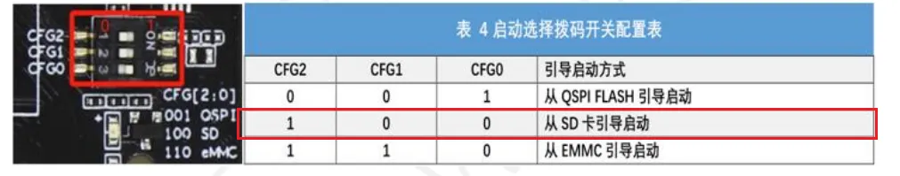
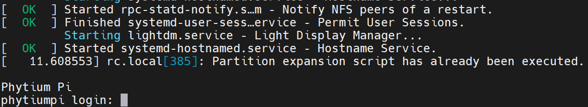
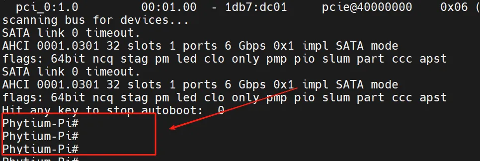
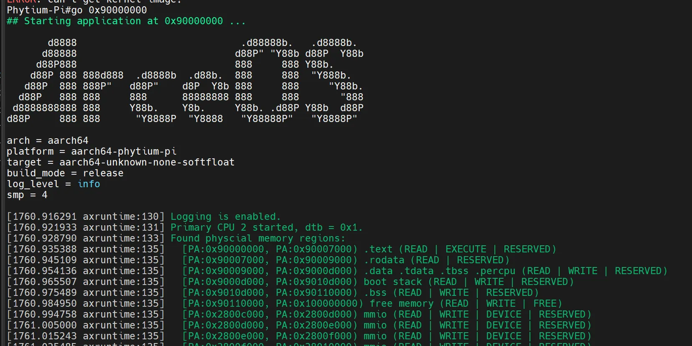

0.2 开发环境准备
0.2.1 运行环境
编译环境
编译依赖ubuntu操作系统，使用的winodws操作系统的同学可以通过安装WSL（linux 子系统）或者VMwork虚拟机来安装ubuntu。 安装好ubuntu 后需要安装必要的一些组件可直接执行如下指令
# 安装git 拉取代码
sudo apt install git
# 输入自己github的邮箱用户名
git config --global user.name "runoob"
git config --global user.email test@runoob.com
# 生成ssh密钥
ssh-keygen -t rsa -b 4096 -C "your.email@example.com"
# 安装编译qemu所需的依赖包
sudo apt install autoconf automake autotools-dev curl libmpc-dev libmpfr-dev libgmp-dev \
gawk build-essential bison flex texinfo gperf libtool patchutils bc \
zlib1g-dev libexpat-dev pkg-config libglib2.0-dev libpixman-1-dev libsdl2-dev \
git tmux python3 python3-pip ninja-build
vscode使用
由于是使用的wsl（inux子系统）作为基础编译环境，默认提供的是命令行搭配vim的方式来编辑文件。这可能并不是大部分人喜欢的开发环境，所以推荐使用vscode搭配remote-ssh插件来进行开发，并且该插件对于wsl是有很好的兼容性的，安装插件后直接选择连接wsl即可使用。
qemu 补充
在第一节的指导手册上使用的qemu版本是7.0.2，而很多模拟的外设是在后续版本才加到qemu中的。所以推荐从官网安装最新版或指定版本qemu官网
以10.0.2 版本为例子，使用如下命令即可完成qemu的安装。
wget https://download.qemu.org/qemu-10.0.2.tar.xz
tar xvJf qemu-10.0.2.tar.xz
cd qemu-10.0.2
make
make install
0.2.2 飞腾派上运行Arceos
首先运行Arceos需要依赖其他系统来提供uboot,所以运行Arceos第一步是先烧录提供的飞腾派OS。
烧录飞腾派OS
飞腾派资料包(提取码：dzdv)
注释： 5-系统镜像/1-PhytiumPIOS（基于Debian）/phytiumpiosv2.1资料包/4G内存-optee版/sdcard.img.7z，解压缩。
下载解压后使用烧录工具将系统镜像烧录到TF卡，之后将TF插到飞腾派的卡槽中，最后连接电源线上电。
烧录工具推荐使用balenaEtcher也可以使用win32 disk image
注释： 常用的手机以及派上的小卡正式名叫做TF或者说microSD 大的是SD卡当然统称为sd卡也是可以的 具体区别可查看 TF卡与SD卡
注意引导方式选择从sd卡启动！！！ 
注释： 如果使用的是带emmc的版本可以直接从emmc启动，是当前版本的麒麟os启动会禁用风扇请注意，过热可能会损坏飞腾派。
启动后连接串口，可以看到如下打印即说明系统成功启动，  账号:root 密码:root
编译及运行
首先快速验证请参考这个链接，可以通过ostool来快速验证当前开发环境是完整可用的，避免后面在进行了较多code后因为难以验证而放弃。
下载Arceos
git clone https://github.com/rcore-os/arceos.git
编译Arceos
make A=examples/helloworld ARCH=aarch64 PLATFORM=aarch64-phytium-pi FEARURES="irq" SMP=4 LOG=info
之后会在example/helloword 文件夹内生成对应的可执行文件helloworld_aarch64-phytium-pi.bin 将该文件拷贝到u盘中后将u盘插入飞腾派，之后重启飞腾派并在重启过程中在串口工具中输入enter以进入cmd模式，成功进入后串口打印如下图所示。 
执行如下指令即可将本地编译的Arceos部署到飞腾派上运行
usb start
fatload usb 0 0x90000000 helloworld_aarch64-phytium-pi.bin
go 0x90000000
